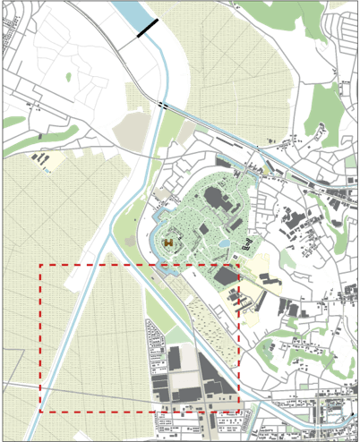
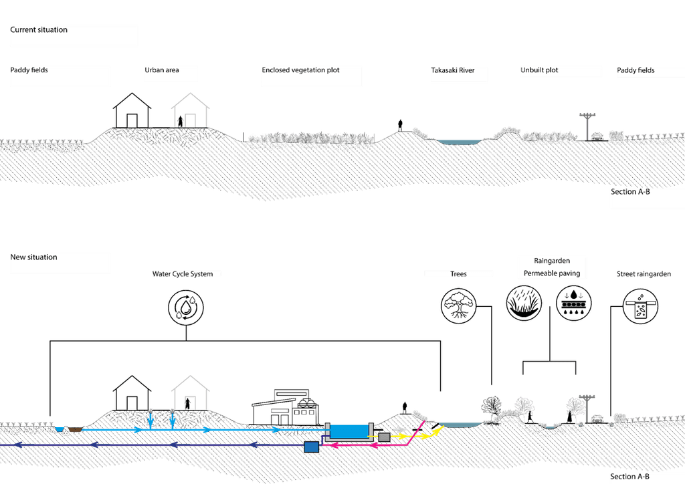
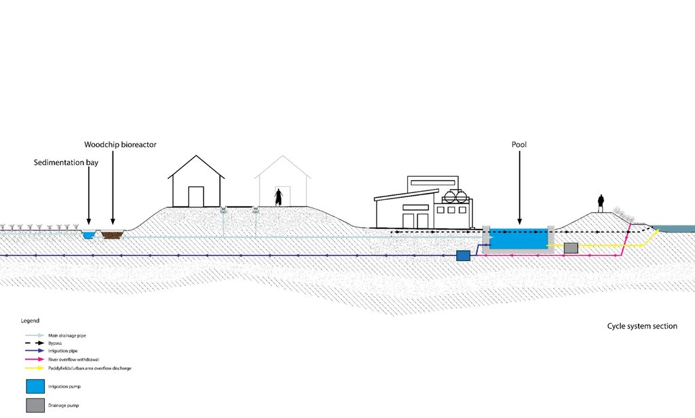
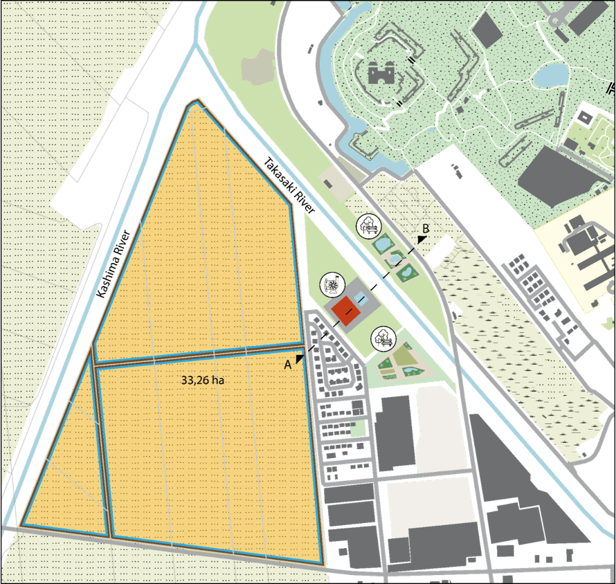
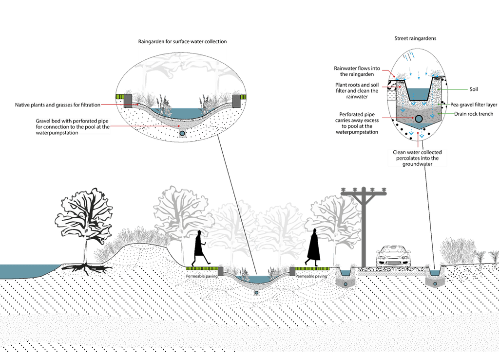
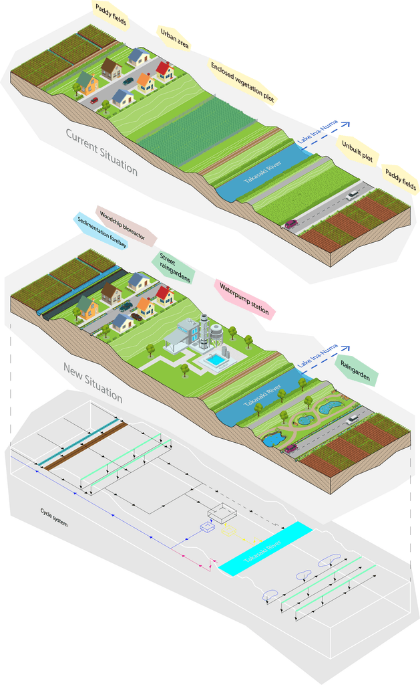

Waterwise Connections is a group project developed for the elective Delta Infrastructure & Environment Design, focused on the Inbanuma Swamp in Chiba Prefecture, Japan. Once part of a dynamic wetland system, the area was disconnected from its natural water cycle during the twentieth century to control flooding and support agriculture, leaving it as one of Japan’s most polluted lakes today. Together with five teammates from architecture, urbanism, landscape architecture and civil engineering we developed a shared vision to reconnect water, ecology and people across the area. The project was carried out in collaboration with Tsukuba University, where we spent a week working alongside local students.
Within the group, I worked as the engineer, developing the systemic and technical water perspective. My individual contribution, Flow Otherwise, is a cyclic water system for a 33-hectare paddy field area southwest of Sakura Castle, where untreated agricultural and urban runoff currently flows straight into the Takasaki River. The design introduces a sedimentation forebay, a woodchip bioreactor, raingardens and a water pump station that together filter and reuse this runoff before it reaches the river. Based on the calculations, the system reduces nitrogen and phosphorus loads by over 50%, lowers runoff to the river by 60%, and increases water reuse by 140%.
To carry out the fieldwork, I spent three weeks in Japan, including the week at Tsukuba University. Alongside the research and design work, this gave me the chance to experience Japan more broadly, from everyday local life to its culture and landmarks, which made the trip as much a personal experience as an academic one.
Tools:
Adobe Indesign, Adobe Illustrator, Miro
Collaborators:
Daphne de Ruiter, Inory Shioyama, Malik Šehmehmedović, Mete Mercan, Niki Sophie Holman
Full Project
Individual work





